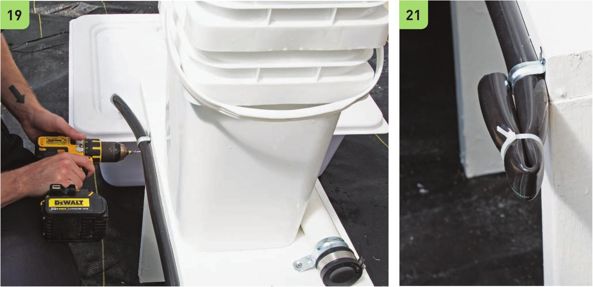

12 Drill a 1 " hole for the 3A" drainage elbow from the bucket. 13 Use the deburring tool to clean the drilled hole. The deburring tool can also be used to widen the hole. 14 Position the 3A" elbow from the lower bucket into the PVC pipe. 15 Drill a 2" hole into the reservoir lid to fit the IV2" PVC drainage line. Position the hole in the reservoir so there will be minimal bend in the rubber elbow. 16 Attach the 10" PVC pipe section to the 2' 1 " PVC pipe section with the rubber elbow. 17 Drill a 1 " hole in the reservoir lid for the 3A" black vinyl tubing. 18 Connect the 3A" black vinyl tubing to the submersible pump placed inside the reservoir. 19 Position the 3A" black vinyl tubing along the edge of the 2 x 12" x 2' board. Fasten into position using the 3A" EMT straps. 20 Leave 6" of vinyl tubing after the last EMT strap. Cut off the excess. 21 U se a zip tie to kink the end of the 3A" tube. This zip tie can be removed to rinse out the irrigation line or to expand the system. 22 Create a small hole in the 3A" tube for the VC double barbed connector. The hole can be made with an irrigation line hole punch or the tip of a screw. Start with a very small hole to avoid the possibility of making the hole too large. If the hole is too large, the 3A" tube will need to be replaced. Insert the W double barbed connector into the small hole, and then repeat to add a second VC double barbed connector. This is similar to the NFT irrigation design, starting on page 69. 23 Fill the bucket with pre-rinsed expanded clay pellets. 24 Re move the reservoir and hand water the bucket to rinse out any plastic shavings or remaining clay dust on the pellets. HYDROPONIC GROWING SYSTEMS 89
